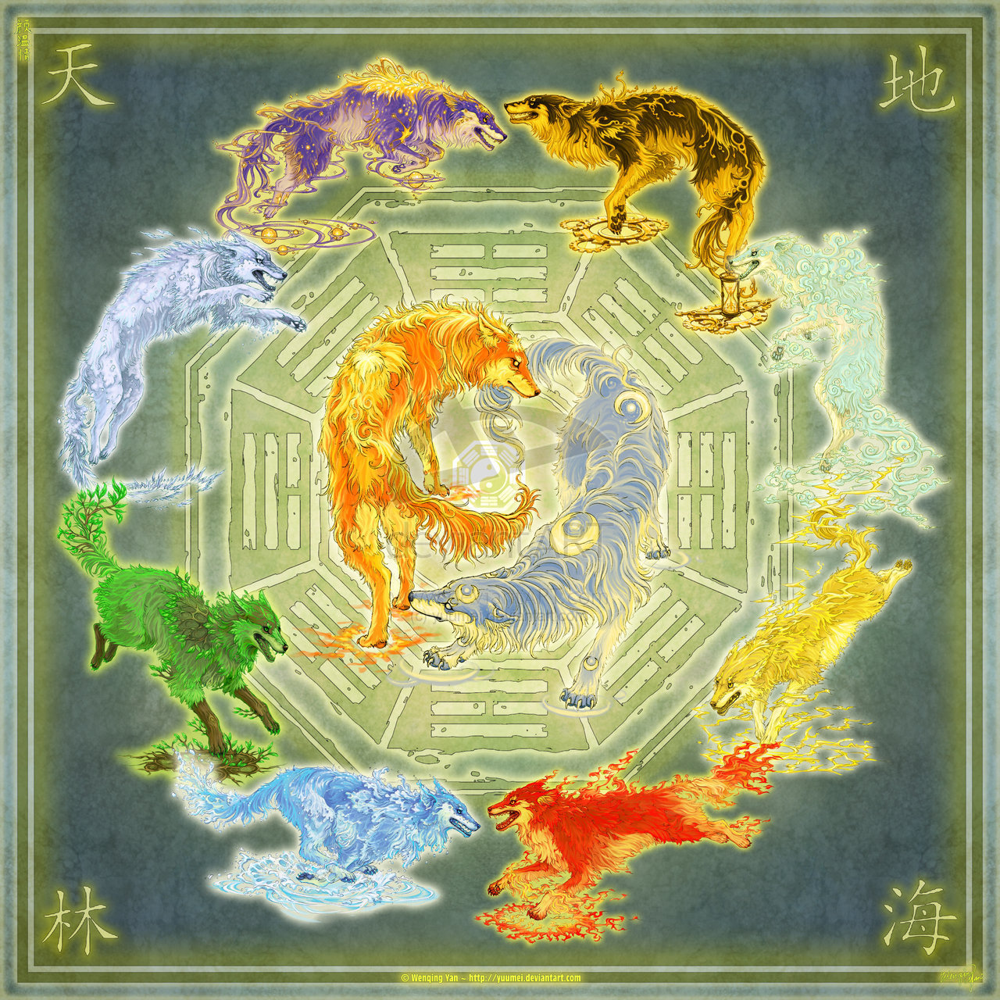

Cidades divididas em elementos
Historia de Lotus
A história de Lotus começa nas sombrias profundezas de um antigo reino, onde um poderoso dragão renasce através de uma magia negra realizada por feiticeiros das trevas. Este ritual envolveu um sacrifício que gerou vida, e dessa energia sombria surgiu Lotus.
Lotus, embora nascido das trevas, possuía uma natureza ambígua. Com o passar do tempo, ele foi exposto à bondade e compaixão, o que influenciou sua personalidade. No entanto, a maldade em sua origem nunca desapareceu completamente.
Evolução de Lotus
Sendo um ser poderoso e com profundo conhecimento em magia manipulativa, Lotus era capaz de realizar feitos extraordinários. Ele dominava a arte de alterar a realidade, controlar mentes e moldar o mundo ao seu redor com sua magia.
A jornada de Lotus se desenrola em um cenário medieval fantástico, cheio de criaturas mágicas e sobrenaturais. Apesar de suas origens sombrias, Lotus se torna um herói relutante, lutando para manter o equilíbrio entre a luz e a escuridão em seu ser. Através de suas aventuras, ele enfrenta desafios e provações que testam sua lealdade e força interior.
Eventualmente, Lotus alcança o ápice de seu poder e é elevado à divindade. Como um deus, ele mantém sua conexão com o mundo, buscando orientar e proteger aqueles que lutam contra as forças do mal. A história de Lotus continua a inspirar aqueles que enfrentam adversidades e buscam redenção, mostrando que mesmo aqueles nascidos nas trevas podem encontrar o caminho da luz.
Ficha do RPG